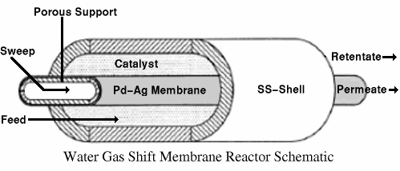
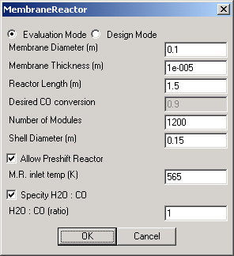
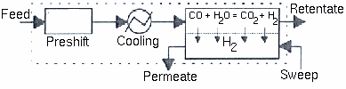
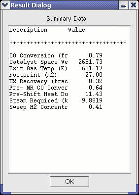

| 
The Water Gas Shift Membrane Reactor simulates the conversion of the syngas product of coal gasification to hydrogen fuel via the water gas shift reaction (WGS): CO + H2O = CO2 + H2 The importance of this reaction lies in the ability to convert CO to H2, which is valuable both as a fuel and as a chemical feedstock. The membrane reactor for WGS uses a two-zone catalytic, fixed-bed, reactor with an integrated hydrogen selective membrane to convert the CO in cleaned syngas to hydrogen. Compared to other possible configurations, the annular feed configuration (see Figure at right) gave higher conversions for the same reactor size, and this configuration is assumed in the model (Marigliano et. al., 2001). Syngas enters and reacts on the feed-side of the membrane, and hydrogen permeates to and is carried away by a sweep gas (typically nitrogen or steam) on the permeate side of the membrane. A membrane reactor module would be positioned after gas cleanup units and before fuel cells, combustors, or other equipment which would process the hydrogen product gas. The MR is a one dimensional model that integrates the hydrogen flux across the catalyst over the length of the unit. The integration is performed numerically using a second order explicit predictor corrector method, and the adiabatic equilibrium is computed locally from the feed gas enthalpy and composition. The model assumes plug flow, with no axial dispersion. The hydrogen permeation rate is assumed to be the limiting process; chemical reactions are assumed fast compared to hydrogen permeation. Thus, the feed gas is assumed to be in chemical equilibrium, and all catalytic reaction dependencies are ignored. This assumption has been used and validated in models in the literature (Damle et. al. 1994), (Devarajan et. al. 1991). Only chemical equilibrium for the water gas shift reaction is assumed, all other species are assumed inert. This option simplifies the solution procedure and, more importantly, allows reasonable computation times. It is important to note that the membrane reactor only works so long as there is a hydrogen partial pressure driving force. Once the feed side hydrogen pressure matches that of the sweep gas, the WGS reaction is limited by the equilibrium composition. The primary purpose of the sweep gas is to dilute the hydrogen enough to provide a sufficient driving force over the membrane, hence allowing high CO conversion. A feed-to-permeate pressure ratio of 15 atmospheres is typical (Bracht et. al., 1997). |
|  | The User Interface first asks the user to specify the method of module calculation. Evaluation Mode (shown) allows the user to input existing membrane geometries (Diameter, Thickness, and Length), and the module will use these values to calculate the resultant CO conversion. To work backwards, the Design Mode allows the user to specify a Desired CO Conversion, and uses a user-specified Diameter and Thickness to determine the Reactor Length necessary to achieve the desired conversion. To allow further flexibility, the model is configured with an option to simulate the requirements of a staged operation in which the feed gas is first introduced to a Preshift catalytic non-membrane Reactor, cooled and then fed to the membrane reactor. A schematic of this option is presented at right, taken from Bracht et. al. (1997). As equilibrium is assumed with the aid of a catalyst, the pre-shift reactor is simply modeled as an adiabatic equilibrium on the feed gas. The temperature of the gas is then dropped to the user-specified M.R. inlet temp, with the required heat duty computed and displayed in the summary window below. In addition, the user can specify the H2O to CO ratio when the Specify H2O:CO option is toggled. |
|  | The Summary screen displays computed values of the module given specifications in the UI. The categories shown at left represent those displayed when both the Preshift and H20:C0 ratio options are toggled. The CO Conversion is displayed as a fraction, as is the H2 Recovery, Pre- MR CO Conversion, and the Sweep H2 Concentration. Also displayed are the Catalyst Space Velocity, Exit Gas Temperature, unit Footprint, Pre-Shift Heat Duty (in MW), and finally the Steam Required (in kg/s). |